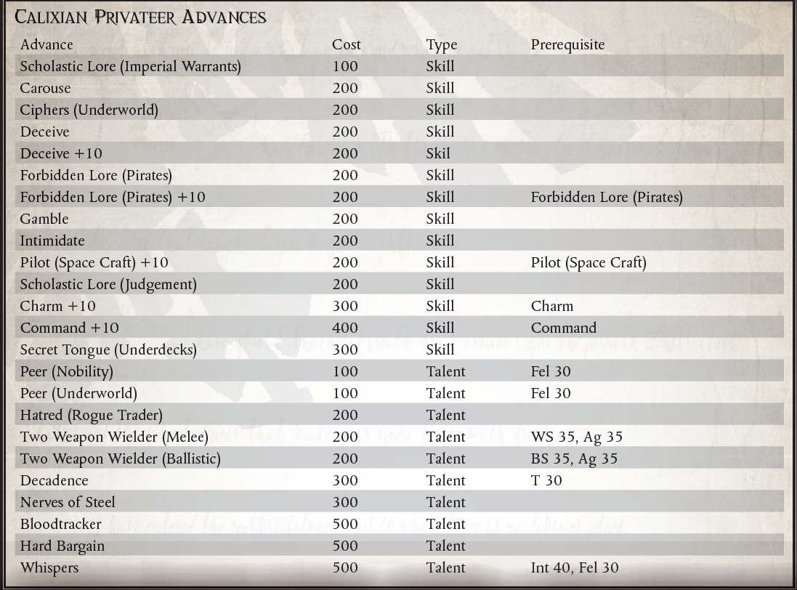

“放下你的虚空护盾，让你的枪安静下来，打开你的金库，并为我既是一个绅士又是一个强盗而感到高兴。”
——Festio Borealis，海盗猎鹰之握号的船长
在遥远的科罗努斯广域，帝国权威薄弱或不存在，帝国法律无法左右，合法商人和野蛮海盗、开拓者和贪婪的建筑师的活动之间通常几乎没有区别。口袋帝国、探险家和不义之财的走私者。值得庆幸的是，在同龄人和法律眼中，Calixian Privateer 知道他在所有方面的立场。被称为“品牌字母”的特殊条款与卡利西斯星区的权力街区紧密相连，这些条款深深地埋藏在他们的贸易保证书的严谨语言中，这些精选的流氓商人被授权掠夺其赞助人在广阔。
Calixian Privateers 不是他们的赞助人的咆哮的小狗，并将任何这样的断言视为严重的侮辱和决斗的召唤。相反，私掠者保护他们的恩人在广域网的利益，以换取安全的停靠港、来自高层朋友的政治资本，以及对他们更可疑的活动的一定程度的法律豁免。正式而言，Calixian Privateer 的任务是保护和防御。 Expanse 的贸易路线、前哨和殖民地都容易受到 Freebooterz、海盗船队和无良商人的掠夺。然而，大多数私掠者不愿意坐下来等待这些威胁来袭。相反，他们深入广域，积极寻找潜在的敌人，并在他们发现的任何地方摧毁他们。在这些尝试中声称的任何打捞和宝藏都被带回私掠者的赞助人，登记为战利品，并以巨额利润卸下。大多数私掠者认为他们的赞助人的对手的车队和前哨是值得派遣的威胁这一事实在上流社会中没有被提及，但所有人都清楚的是，卡利西斯部门州长马里乌斯·哈克斯禁止的血腥贸易战只是向外转移到广袤。事实上，哈克斯州长几乎没有限制颁发“侯爵信”，而且众所周知是亲自颁发，这表明他打算将此类冲突排除在他的部门之外，而是在他的影响范围内。
由于卡利西亚私掠者公开从事的活动充其量是道德上不健全的，最坏的情况是完全非法的，他们必须经常与社会的渣滓打交道，从走私者、犯罪集团、堕落的贵族和奴隶主，到因这些行为而变得一贫如洗的全体民众其他私掠者。通过与这些令人讨厌的类型保持密切联系，私掠者能够建立庞大的权力基础和支持网络，超越其赞助人的影响。当时代变得艰难，私掠者和他的赞助人之间出现冲突时，这些阴暗的盟友和不情愿的同伙会寻求帮助。培养这种联盟的私掠者往往发现自己是海盗王国和犯罪帝国的统治者。一位明智的赞助人密切关注他们的私掠者，以免他变得太成功并开始质疑他的关系的必要性。
有多少不同类型的卡利西亚私掠船，就多少有多少贸易权证。每个无情的强盗都有一个绅士小偷，每个袭击掠夺者都有一个捍卫者和人民的捍卫者。每一个穷困潦倒的盗贼商人在寻求盟友时被迫为奴，都会有一位威风凛凛的海盗王，他的赞助人被虚拟囚禁在宫殿的镀金门内。所有卡利西亚私掠者的共同点是与他们的赞助人的密切联系和良好的声誉，无论好坏。
成为卡利西亚私掠者所需的只是赞助人和经授权书修改的贸易令。可行的赞助人包括公司、帝国贵族、商人房屋、航海家、行星和子部门总督、流氓商人王朝和富有的公会。潜在赞助人的名单很长，这让有进取心的 Rogue Traders 可以选择盟友。获得品牌字母更成问题。虽然一些潜在的赞助人大声宣称他们有能力和渴望向任何愿意承诺服务的流氓商人颁发品牌信函，但大多数情况下，赞助人和朝代必须互相请求，并请求大地修会，以获得特权。正是由于这些原因，许多热心的 Rogue Traders 仔细研究了他们的认股权证的法律细节，希望找到一个符号来表明从未被撤销并且他们可以通过与生俱来的权利要求的 Marque 字母。许多帝国富裕的公民被粗暴地唤醒，却发现一艘流氓商人的船遮蔽了他们庄园上空的天空，她的船长要求同样的款待，曾经对一位已故的祖先提供同样的款待。
所需职业：流氓交易员
备用等级：2 或更高 (7,000 xp)。
其他要求：盗贼商人在成为卡利西亚私掠者之前必须拥有著名的权证天赋。
